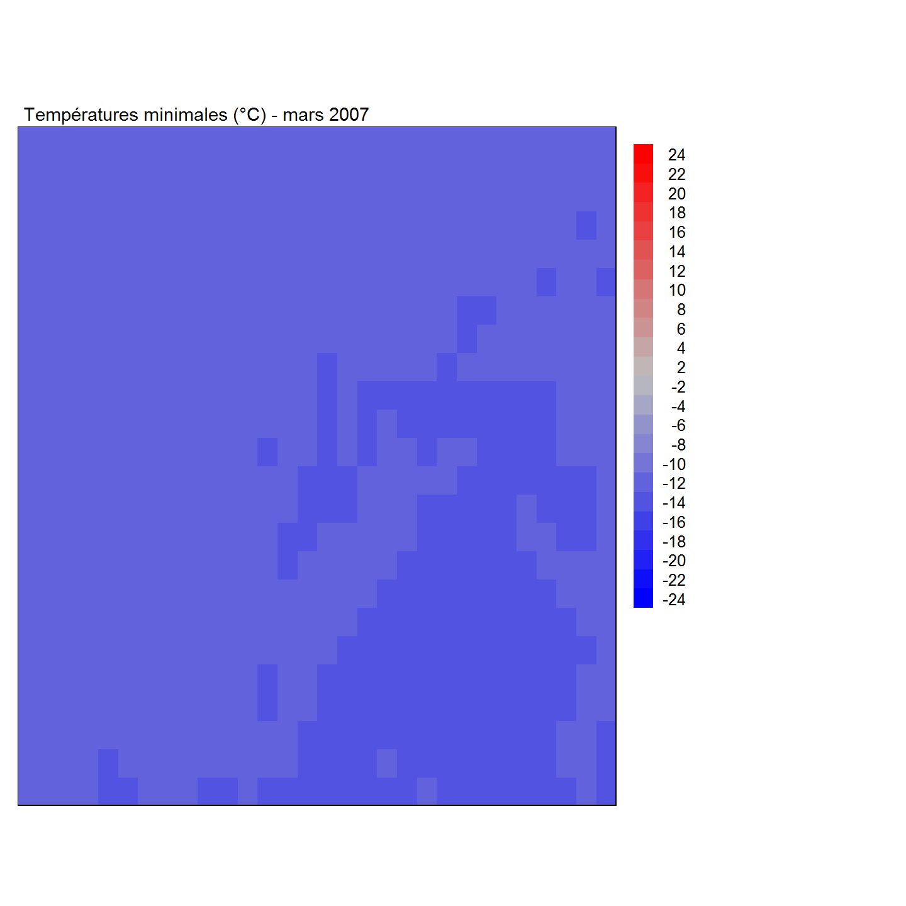
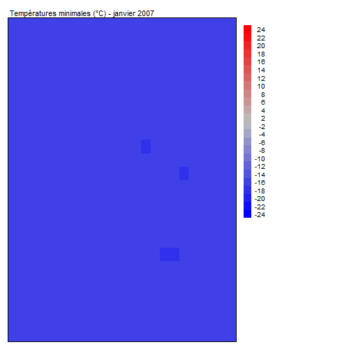

9.2 Exercice
Dans cette section, vous mettrez en pratique certains concepts vus dans la section leçon de ce module. Bien que la réponse à chaque question soit disponible, il est très important de tenter d’y répondre par vous même!
Question 1
Créer une animation de la carte des températures minimums pour les 12 premiers mois de l’année 2007. Votre animation doit avoir les caractéristiques suivantes :
- Couvrir seulement la région allant de 71.4°Ouest à 71°Ouest, en longitude, et de 45°Nord à 45.4°Nord en latitude dans le dans le système géodésique mondial WGS84.
- Comprendre légende affichant les températures de -24 C à +24 C par bond de 2 C.
- Afficher la légende à droite de la carte.
- Utiliser une palette de couleurs allant d’une couleur froide pour les températeurs négatives vers une couleur chaude pour les températures négatives.
- Avoir un titre qui comprend le mois (en français) et l’année.
- Être construite avec la bibliothèque
tmap.
Réponse
Pour commencer, il nous faut sélectionner la région demandée de mint en utilisant la fonction crop(). Nous savons que ce rasterStack utilise le système WGS84, nous n’avons donc pas à changer le SCR.
region <- extent(c(-71.5, -71, 45, 45.4))
mint_region <- crop(mint,region)Ensuite, construisons une fonction pour afficher une seule couche du rasterStack mint_region avec les caractéristiques demandées. Définission d’abord les éléments propres à la légende, aux couleurs, et au titre.
# Légende allant de -24 à 24 par pas de 2.
L <- seq(-24, 24, by = 2)
# Palette de couleurs allant de froid à chaud
# Par exemple de bleu à rouge en passant par gris
Pal <- colorRampPalette( c("blue","grey", "red"))
# On assigne une couleur à chaque élément de la légende
Coul <- Pal(length(L))
# On peut également assigner des noms à chaque élément.
# Par défaut, chaque élément aura la forme : "-24 to -22"
noms <- c(L[1:12], L[14:25])
noms <- as.character(noms)
# On se souvient que les dates associées à chacune des couches de mint
# sont données par le vecteur `temps`
# ainsi, la bibliothèque lubridate nous permet de connaitre
# l'année
year(temps[1:12]) [1] 2007 2007 2007 2007 2007 2007 2007 2007 2007 2007
[11] 2007 2007# et le mois
month(temps[1:12]) [1] 1 2 3 4 5 6 7 8 9 10 11 12# qu'on peut écrire en français
FR <- c("janvier", "février", "mars","avril","mai", "juin", "juillet", "août", "septembre", "octobre", "novembre", "décembre")
FR[month(temps[1:12])] [1] "janvier" "février" "mars" "avril"
[5] "mai" "juin" "juillet" "août"
[9] "septembre" "octobre" "novembre" "décembre" Créons maintenant la fonction pour afficher un seul mois.
# La fonction comprend 2 arguments:
# - RS, le rasterStack
# - t, le mois
library(tmap)
fct_carte <- function(RS,t){
tm_shape(RS[[t]])+ #couche correspondant au mois t
tm_raster(palette=Coul,
title = "", #pas de titre pour la légende
breaks = L,
labels=noms,
legend.is.portrait = TRUE,
legend.reverse = TRUE) + #assure que les T négatives sont au bas de la légende
tm_layout(main.title = paste0("Températures minimales (°C) - ",FR[month(temps[t])]," ",year(temps[t])), main.title.size = 0.9,
legend.outside = TRUE,
legend.outside.position = "right",
legend.text.size = 0.8,
legend.format = list(text.align = "right"))
}Par exemple, pour le premier mois, cette fonction affiche :
# Par exemple cette fonction donne
fct_carte(mint_region,3)
Nous devons à présent créer une fonction qui répètera l’affichage de la carte pour tous les mois souhaités.
# Cette fonction compte encore deux arguments:
# - RS, le rasterStack
# - T, le nombre de mois
anim_carte <- function(RS, T){
for(i in 1:T){
print(fct_carte(RS,i))
}
}Pour les douzes premiers mois, cette fonction affichera la séquence suivante:
anim_carte(mint_region,12)
Vous pouvez également sauvegarder cette animation en exécutant cette ligne de commande :
saveGIF(anim_carte(mint_crop, 12), movie.name = "anim_mint.gif", ani.height = 500, ani.width = 500)